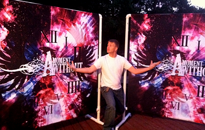
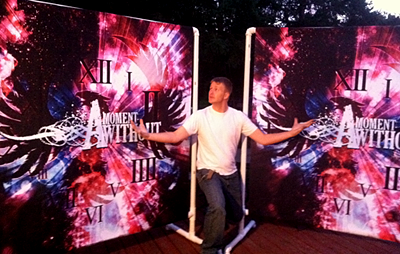

After a successful first project with A Moment Without, they hired me on again for the second E.P. release Born of Fire. I decided to take a different appraoch with this design. After several meetings with the guys we all decided to try push the envelope and stay away from the cliche stuff like FIRE. After the breifing we decided on doing a nebula design to represent the fire. Using Adobe software I was able to stream line my design using vector and raster elements to give it some dynamics. We went with another vibrant color pallete to help balance the blacks and contrast, it is always good to make your work pop for new music and bands. The eye catcher!!
With the finished project as what you see, I believe I captured what band wanted and needed for a strong follow up disc. With several preorders we went a different approach this time by having customized bonus posters for the first 100 preorders. This also included a bonus DVD with I created, along with music video and webisodes leading up to the release. I also had the pleasure of doing all the photography for this project.


In the summer of 2009, James Sanders from A Moment Without contacted me to work on there band project. Through references he was impressed and wanted to see what I could do. After first branding the band came the important part of finding the symbol that would represent the bands disc. Through several rounds of concepts with the guys, we had concepted an idea of a clock to be the symbol. After a breifing with the band I started on the creative portion of the design, creating the idea of time falling off the clock. In the midst of the chaos, the clock is falling apart representing the scene and trying to revive it. I added several key features such as Minneapolis Skyline in the clock, the deteriorating part of the clock is actually symbols of the state (Minnesota).
With that idea really helped pull together the design and idea they were going for. A scene in chaos falling apart, admist the logo being top point to represent pulling it together. With the title, A Place to Call Home is a statement that we love our state and lets do this together.